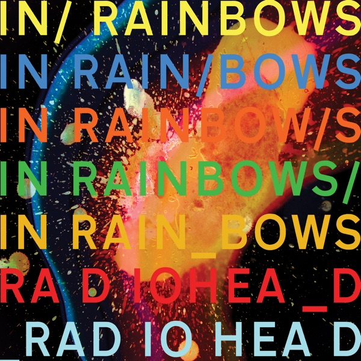

YouTube, built in
One video.
A whole album.
Save one song. Turn a playlist into an album. Or split a full-album video into individually tagged tracks.
No chapters? Choose a matching track list. betterPod finds the pauses and separates the songs.
Optional integration · for videos you own or may download
One full-album videoReady for your libraryIn RainbowsRadiohead
- 0115 Step
- 02Bodysnatchers
- 03Nude
Individual tracks. Titles, numbers and artwork included.